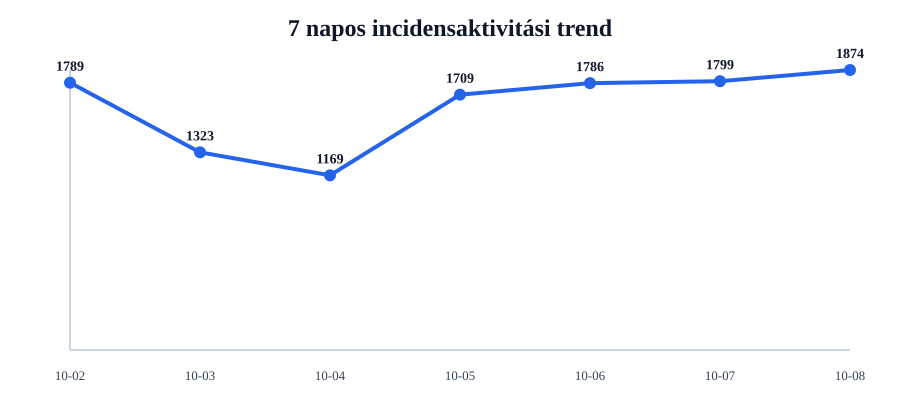
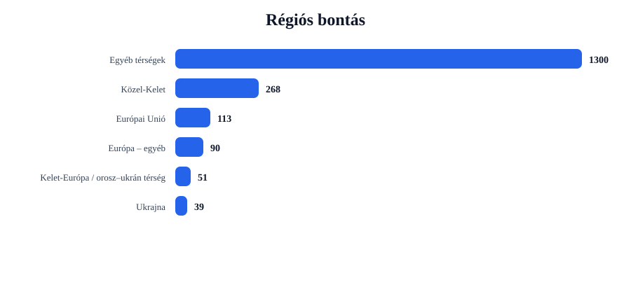
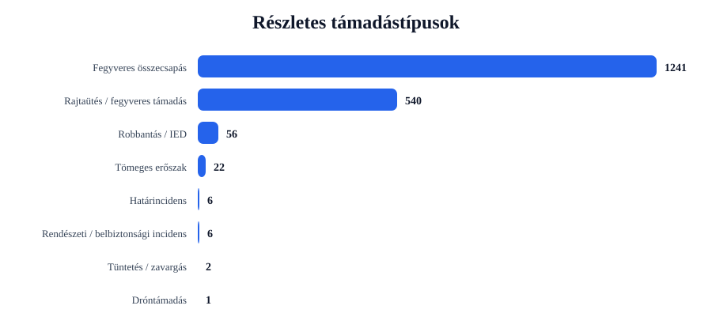
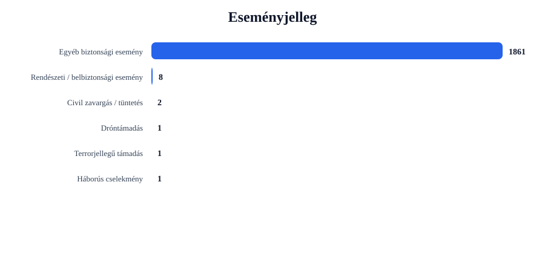

Rövid napi értékelés
Az incidensek száma emelkedett: +75 esemény, 4.2% növekedés.
A legtöbb találat ehhez az országhoz kapcsolódott: United States (633 esemény).
A legerősebb regionális súlypont: Egyéb térségek (1300 esemény).
A leggyakoribb részletes támadástípus: Fegyveres összecsapás (1241 találat).
A leggyakoribb eseményjelleg: Egyéb biztonsági esemény (1861 találat).
A drón-, terrorjellegű és háborús események felismerése kulcsszavas besorolással történik. Ez jó elemzési szűrő, de kézi ellenőrzést továbbra is igényelhet.
Régiós helyzetkép
Európai Unió
Azonosított események száma: 113. Leginkább érintett országok: France (16), Poland (12), Ireland (11).
Domináns támadástípusok: Fegyveres összecsapás (79), Rajtaütés / fegyveres támadás (33), Robbantás / IED (1). Domináns eseményjelleg: Egyéb biztonsági esemény (112), Terrorjellegű támadás (1).
| Cím | Ország | Helyszín | Részletes típus | Eseményjelleg | Forrás |
|---|---|---|---|---|---|
| fight – Lower Austria, Niederörreich, Austria | Austria | Lower Austria, Niederörreich, Austria | Robbantás / IED | Terrorjellegű támadás | www.vol.at |
| fight – Madrid, Madrid, Spain | Spain | Madrid, Madrid, Spain | Fegyveres összecsapás | Egyéb biztonsági esemény | www.clevelandjewishnews.com |
| assault – Greece | Greece | Greece | Rajtaütés / fegyveres támadás | Egyéb biztonsági esemény | wcbm.com |
| fight – France | France | France | Fegyveres összecsapás | Egyéb biztonsági esemény | www.gamesindustry.biz |
| fight – Paris, France (general), France | France | Paris, France (general), France | Fegyveres összecsapás | Egyéb biztonsági esemény | www.novinite.com |
Ukrajna
Azonosított események száma: 39. Leginkább érintett országok: Ukraine (39).
Domináns támadástípusok: Robbantás / IED (31), Fegyveres összecsapás (6), Rajtaütés / fegyveres támadás (2). Domináns eseményjelleg: Egyéb biztonsági esemény (39).
| Cím | Ország | Helyszín | Részletes típus | Eseményjelleg | Forrás |
|---|---|---|---|---|---|
| fight – Pryluky, Zhytomyrs'ka Oblast', Ukraine | Ukraine | Pryluky, Zhytomyrs'ka Oblast', Ukraine | Robbantás / IED | Egyéb biztonsági esemény | www.odt.co.nz |
| fight – Kramatorsk, Donets'ka Oblast', Ukraine | Ukraine | Kramatorsk, Donets'ka Oblast', Ukraine | Robbantás / IED | Egyéb biztonsági esemény | www.naharnet.com:443 |
| fight – Kremenchuk, Poltavs'ka Oblast', Ukraine | Ukraine | Kremenchuk, Poltavs'ka Oblast', Ukraine | Robbantás / IED | Egyéb biztonsági esemény | www.newcastleherald.com.au |
| assault – Kramatorsk, Donets'ka Oblast', Ukraine | Ukraine | Kramatorsk, Donets'ka Oblast', Ukraine | Robbantás / IED | Egyéb biztonsági esemény | www.globalissues.org |
| fight – Chernihiv, Chernihivs'ka Oblast', Ukraine | Ukraine | Chernihiv, Chernihivs'ka Oblast', Ukraine | Robbantás / IED | Egyéb biztonsági esemény | www.gdnonline.com:443 |
Balkán
Azonosított események száma: 13. Leginkább érintett országok: Turkey (10), Albania (2), Bosnia-Herzegovina (1).
Domináns támadástípusok: Fegyveres összecsapás (11), Rajtaütés / fegyveres támadás (1), Tömeges erőszak (1). Domináns eseményjelleg: Egyéb biztonsági esemény (13).
| Cím | Ország | Helyszín | Részletes típus | Eseményjelleg | Forrás |
|---|---|---|---|---|---|
| fight – Turkey | Turkey | Turkey | Fegyveres összecsapás | Egyéb biztonsági esemény | www.surinenglish.com |
| fight – Ankara, Ankara, Turkey | Turkey | Ankara, Ankara, Turkey | Fegyveres összecsapás | Egyéb biztonsági esemény | www.naturalnews.com |
| fight – Istanbul, Istanbul, Turkey | Turkey | Istanbul, Istanbul, Turkey | Fegyveres összecsapás | Egyéb biztonsági esemény | www.dailysabah.com |
| fight – Izmir, Izmir, Turkey | Turkey | Izmir, Izmir, Turkey | Fegyveres összecsapás | Egyéb biztonsági esemény | www.thenationalnews.com |
| fight – Smyrna, Izmir, Turkey | Turkey | Smyrna, Izmir, Turkey | Fegyveres összecsapás | Egyéb biztonsági esemény | patriotpost.us |
Közel-Kelet
Azonosított események száma: 268. Leginkább érintett országok: Israel (48), Iran (29), Saudi Arabia (26).
Domináns támadástípusok: Fegyveres összecsapás (185), Rajtaütés / fegyveres támadás (68), Tömeges erőszak (13). Domináns eseményjelleg: Egyéb biztonsági esemény (266), Civil zavargás / tüntetés (1), Dróntámadás (1).
| Cím | Ország | Helyszín | Részletes típus | Eseményjelleg | Forrás |
|---|---|---|---|---|---|
| fight – Shahed, Fars, Iran | Iran | Shahed, Fars, Iran | Dróntámadás | Dróntámadás | www.newcastleherald.com.au |
| fight – Gaza, Israel (general), Israel | Israel | Gaza, Israel (general), Israel | Fegyveres összecsapás | Egyéb biztonsági esemény | www.sentinelandenterprise.com |
| fight – Yemen | Yemen | Yemen | Fegyveres összecsapás | Egyéb biztonsági esemény | www.freemalaysiatoday.com |
| fight – Tehran, Tehran, Iran | Iran | Tehran, Tehran, Iran | Fegyveres összecsapás | Egyéb biztonsági esemény | www.freemalaysiatoday.com |
| fight – Israel | Israel | Israel | Fegyveres összecsapás | Egyéb biztonsági esemény | www.freemalaysiatoday.com |
Kelet-Európa / orosz–ukrán térség
Azonosított események száma: 51. Leginkább érintett országok: Russia (47), Belarus (3), Moldova (1).
Domináns támadástípusok: Robbantás / IED (24), Fegyveres összecsapás (18), Rajtaütés / fegyveres támadás (9). Domináns eseményjelleg: Egyéb biztonsági esemény (51).
| Cím | Ország | Helyszín | Részletes típus | Eseményjelleg | Forrás |
|---|---|---|---|---|---|
| fight – Omsk, Omskaya Oblast', Russia | Russia | Omsk, Omskaya Oblast', Russia | Robbantás / IED | Egyéb biztonsági esemény | en.apa.az |
| fight – Ryazan, Ryazanskaya Oblast', Russia | Russia | Ryazan, Ryazanskaya Oblast', Russia | Robbantás / IED | Egyéb biztonsági esemény | www.mirror.co.uk |
| fight – Samara, Samarskaya Oblast', Russia | Russia | Samara, Samarskaya Oblast', Russia | Robbantás / IED | Egyéb biztonsági esemény | jowhar.com |
| fight – Belgorod, Belgorodskaya Oblast', Russia | Russia | Belgorod, Belgorodskaya Oblast', Russia | Robbantás / IED | Egyéb biztonsági esemény | www.aol.co.uk |
| fight – Zelenskiy, Astrakhanskaya Oblast', Russia | Russia | Zelenskiy, Astrakhanskaya Oblast', Russia | Robbantás / IED | Egyéb biztonsági esemény | www.dailymaverick.co.za |
Európa – egyéb
Azonosított események száma: 90. Leginkább érintett országok: United Kingdom (78), Switzerland (3), Oceans (2).
Domináns támadástípusok: Fegyveres összecsapás (64), Rajtaütés / fegyveres támadás (24), Tömeges erőszak (2). Domináns eseményjelleg: Egyéb biztonsági esemény (90).
| Cím | Ország | Helyszín | Részletes típus | Eseményjelleg | Forrás |
|---|---|---|---|---|---|
| assault – United Kingdom | United Kingdom | United Kingdom | Rajtaütés / fegyveres támadás | Egyéb biztonsági esemény | www.mirror.co.uk |
| fight – Black Sea, Oceans (general), Oceans | Oceans | Black Sea, Oceans (general), Oceans | Fegyveres összecsapás | Egyéb biztonsági esemény | www.novinite.com |
| fight – United Kingdom | United Kingdom | United Kingdom | Fegyveres összecsapás | Egyéb biztonsági esemény | www.novinite.com |
| fight – London, London, City of, United Kingdom | United Kingdom | London, London, City of, United Kingdom | Fegyveres összecsapás | Egyéb biztonsági esemény | eturbonews.com |
| fight – Sandringham, Norfolk, United Kingdom | United Kingdom | Sandringham, Norfolk, United Kingdom | Fegyveres összecsapás | Egyéb biztonsági esemény | www.hepburnadvocate.com.au |
Egyéb térségek
Azonosított események száma: 1300. Leginkább érintett országok: United States (633), India (100), Nigeria (85).
Domináns támadástípusok: Fegyveres összecsapás (878), Rajtaütés / fegyveres támadás (403), Határincidens (6). Domináns eseményjelleg: Egyéb biztonsági esemény (1290), Rendészeti / belbiztonsági esemény (8), Civil zavargás / tüntetés (1).
| Cím | Ország | Helyszín | Részletes típus | Eseményjelleg | Forrás |
|---|---|---|---|---|---|
| fight – Pasquotank, North Carolina, United States | United States | Pasquotank, North Carolina, United States | Fegyveres összecsapás | Háborús cselekmény | ecsu.edu |
| fight – Missouri, United States | United States | Missouri, United States | Fegyveres összecsapás | Egyéb biztonsági esemény | www.theguardian.com |
| fight – Maine, United States | United States | Maine, United States | Fegyveres összecsapás | Egyéb biztonsági esemény | fox23maine.com |
| fight – California, United States | United States | California, United States | Fegyveres összecsapás | Egyéb biztonsági esemény | 790waeb.iheart.com |
| fight – Toronto, Ontario, Canada | Canada | Toronto, Ontario, Canada | Fegyveres összecsapás | Egyéb biztonsági esemény | medicinehatnews.com |
Grafikonos áttekintés




Top 5 kiemelt esemény
| # | Cím | Ország | Helyszín | Részletes típus | Eseményjelleg | Súly | Forrás |
|---|---|---|---|---|---|---|---|
| 1 | fight – Lower Austria, Niederörreich, Austria | Austria | Lower Austria, Niederörreich, Austria | Robbantás / IED | Terrorjellegű támadás | 26 | www.vol.at |
| 2 | fight – Pryluky, Zhytomyrs'ka Oblast', Ukraine | Ukraine | Pryluky, Zhytomyrs'ka Oblast', Ukraine | Robbantás / IED | Egyéb biztonsági esemény | 21 | www.odt.co.nz |
| 3 | fight – Kramatorsk, Donets'ka Oblast', Ukraine | Ukraine | Kramatorsk, Donets'ka Oblast', Ukraine | Robbantás / IED | Egyéb biztonsági esemény | 21 | www.naharnet.com:443 |
| 4 | fight – Kremenchuk, Poltavs'ka Oblast', Ukraine | Ukraine | Kremenchuk, Poltavs'ka Oblast', Ukraine | Robbantás / IED | Egyéb biztonsági esemény | 21 | www.newcastleherald.com.au |
| 5 | assault – Kramatorsk, Donets'ka Oblast', Ukraine | Ukraine | Kramatorsk, Donets'ka Oblast', Ukraine | Robbantás / IED | Egyéb biztonsági esemény | 21 | www.globalissues.org |
Napi bontások
Régiók
- Egyéb térségek1300
- Közel-Kelet268
- Európai Unió113
- Európa – egyéb90
- Kelet-Európa / orosz–ukrán térség51
- Ukrajna39
- Balkán13
Országok
- United States633
- India103
- Nigeria85
- United Kingdom78
- Australia51
- Israel48
- Russia47
- Canada40
- Ukraine39
- South Africa36
Részletes típusok
- Fegyveres összecsapás1241
- Rajtaütés / fegyveres támadás540
- Robbantás / IED56
- Tömeges erőszak22
- Határincidens6
- Rendészeti / belbiztonsági incidens6
- Tüntetés / zavargás2
- Dróntámadás1
Eseményjelleg
- Egyéb biztonsági esemény1861
- Rendészeti / belbiztonsági esemény8
- Civil zavargás / tüntetés2
- Dróntámadás1
- Terrorjellegű támadás1
- Háborús cselekmény1
Források
- www.dailymail.com66
- timesofindia.indiatimes.com41
- nypost.com39
- www.aol.co.uk39
- www.hindustantimes.com30
- www.israelnationalnews.com27
- www.arabnews.com26
- allafrica.com25
- aninews.in24
- www.jpost.com23
Blogra használható intelligence card
Módszertani megjegyzés
Ez a jelentés nyílt forrású, automatizált adatgyűjtés alapján készül. A dróntámadások, terrorjellegű események és háborús cselekmények azonosítása kulcsszavas besorolással történik. Ez elemzési támpont, nem hivatalos minősítés.